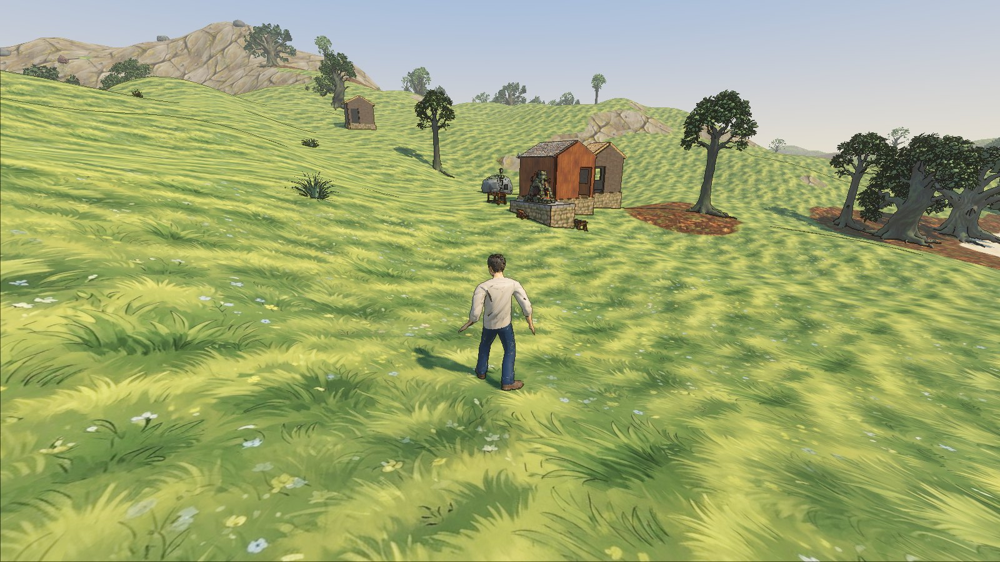

From bare island to a village
Two days of playtesting turned into a lot of changes. The island finally looks like the paintings it's based on, and there's much more to build.

- A real settler. Players are now a hand-made, rigged character who walks, runs, jumps, chops trees and mines rock.
- A painted look. Ink outlines, hand-painted textures on every building piece, and painted ground: meadow grass, sand, rock, and leaf litter under the oaks. Ground you dig or flatten turns to bare earth.
- A first shelter by hand. Pull sticks from a tree with bare hands and lash them into floors and walls, then top the hut with thatch, all before you own a single tool.
- Roofs and gables in thatch and wooden shingles.
- The smithy. A rune-stone forge, plus an anvil, bellows and smithing bench that unlock and improve what it makes. Workshops are placed freely, at any angle, rather than snapped to the grid.
- Land claims. A claim post keeps the land around it yours: nobody else can build, dig or gather there.
- A new pack with slots and item icons, and a crafting screen that shows what you'll get before you make it.

The bots that test the server now build their own camps too: a thatched shelter, a smithy and a timber hut, each on land they've claimed. The camps in these screenshots are theirs.